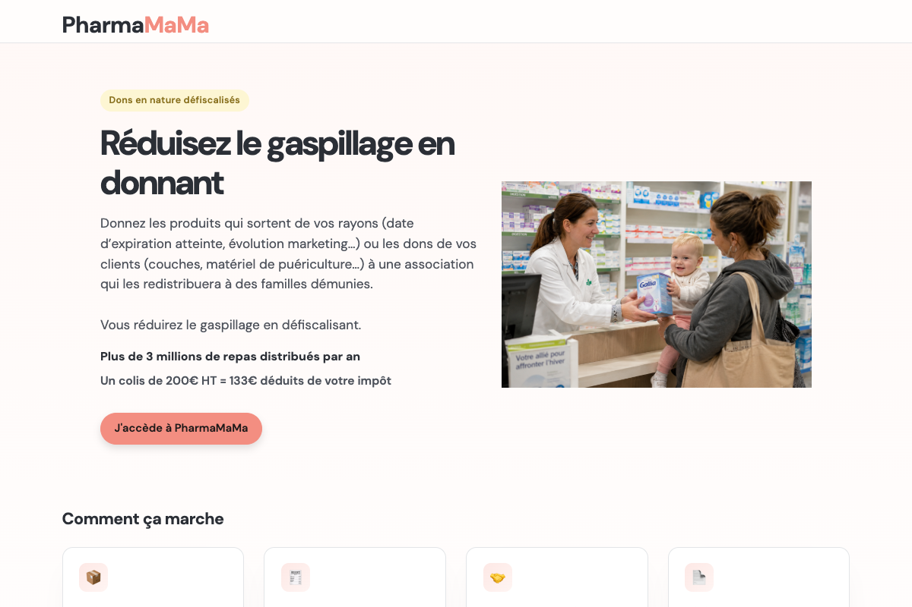

Web application developed for the MaMaMa association to connect pharmacies with solidarity organizations. Pharmacists prepare parcels of parapharmacy products (hygiene, diapers, childcare items…) instead of discarding them; the association receives, verifies and redistributes to families, with full traceability and tax documentation.
The pharmacist scans items (handheld scanner or manual entry), prints the list and delivery slip, then hands the parcel to their usual carrier.
On receipt, the association scans the delivery slip, validates or adjusts the contents, then triggers tax receipt generation for the pharmacy.
Project led by MaMaMa — over 25,000 families supported in Île-de-France and Marseille
Live